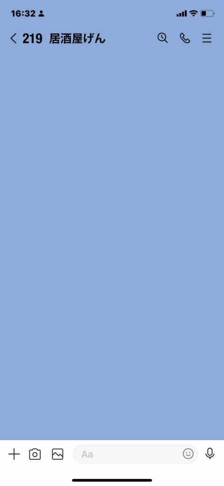
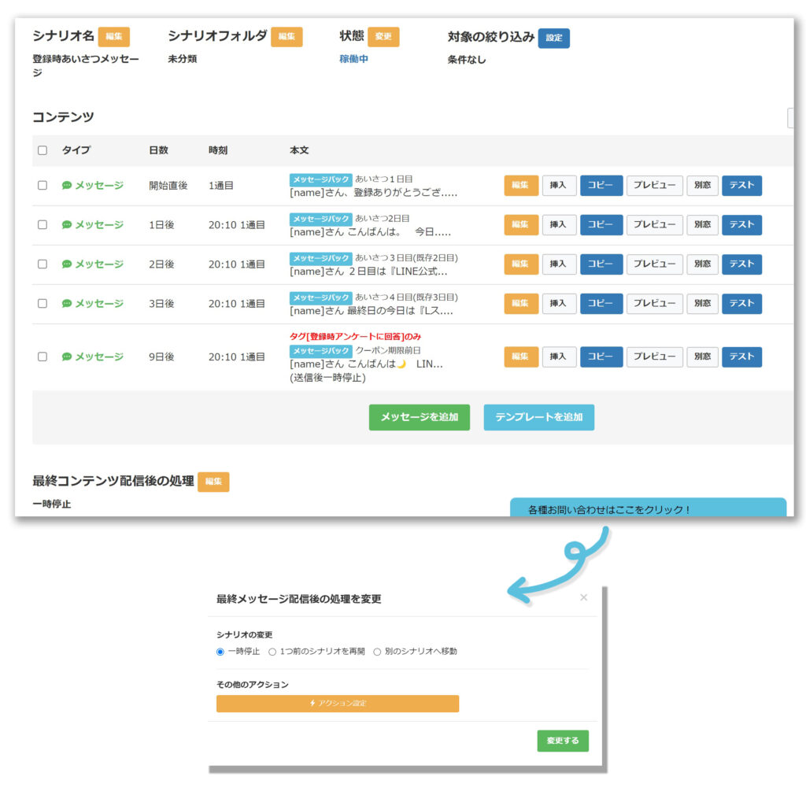

#043_募集した質問の答え
こんにちは、matsumotoです。
前回、募集した質問を送ってくださった読者の皆様、ありがとうございました！中には過去の記事で解説した内容も見られましたが、いざ運用となると皆さんお忙しいのだなと実感しています。
中でも「これはあるある！」と感じた質問を中心に回答していきたいと思いますので、同じことを疑問に思っていた方は、ぜひ参考にしてください！
１）iPadでも使えるの？
あるあるですね～！matsumotoもよく「PCでもスマホでも使えます！」と言いますが、iPadなどのタブレット端末からも、公式アカウントやLステップを利用できます。
iPad上で「ブラウザ」（iOS12以降・できればGoogle Chrome）から操作できますよ！
２）QRコードから友だち追加出来ない

これも、とっさに混乱しやすいポイントですね。
自分のQRコードを見せて友だちになってもらった時は、まず「友だち追加しますか？」という画面が表示されます。
この時いきなり「トーク画面」になるのであれば、すでに友だち登録済です！念の為、何か簡単なメッセージを送ってもらい、自分の端末でご確認ください。
〈ご注意！〉
なお、Lステップ導入前に登録されていた友だちは、Lステップ導入後にあらためて相手からメッセージを送ってもらうなどしないと、Lステップの友だちリストに反映されません。
３）Lステップ上で友だちをブロックできる？
いざ友だちになってもらったものの、対応に困るような方もいますよね。公式アカウントだから相手をブロックできない、ということはありません。Lステップを導入後も、ブロックは出来ますのでご安心ください（また友だちとして復活する可能性がある場合は「非表示」を使いましょう）
ちなみに、ブロックしてしまえばLステップから一斉配信をするときもその人には届きません。タグや友だち情報などのデータも消えます（初期化される）が、送信数を節約したい場合など有効です。
４）Lステップで複数アカウントを管理できる？
これは、残念ながら出来ません。Lステップ１契約につき、１アカウントのみ利用できます。
すでに支店など複数のアカウントを作ってしまった後でLステップの導入をお考えの場合は、メインのアカウントを登録してもらえるよう誘導しましょう。
元々どのアカウントに登録されていたのか把握しておきたいなら、Lステップの「タグ付け」機能で登録時に分類できますよ！それによって元の登録店別・◯◯県のみの優待クーポン、など条件を絞り込んだ「セグメント配信」も出来ます。
５）LINEアカウントの認証のタイミング。。。
これは、気にしなくても大丈夫。Lステップを導入してからLINEアカウントが認証されても、特にLステップ上で手続きなどは不要です。
６）シナリオ配信終了時のアクション
１つのシナリオ配信が一通り終わったら、そのまま配信をやめるのか、もしくは同じシナリオを繰り返し配信するか、または別のシナリオに移動させるなど「最終コンテンツ配信後の処理」を選択できます。

何か特別なアクションを設定したい場合は、「その他のアクション」を追加することも可能です。
７）友だちリスト全員にリマインダを一斉配信したい
Lステップの友だちリストから全員にリマインダを配信しようとすると、基本的には１ページ（50人）ずつしか選択できません。
メニューバーの下に「□表示中条件に当てはまる友だち000人をすべて選択」というメッセージが表示されていますので、□にチェックを入れましょう。
８）テンプレートを削除したいけど。。。
既存のシナリオにそのテンプレートを組み込んでいた場合はどうなる？というご質問でした。
これは手間がかかるだけにご注意を！シナリオに組み込まれていると、シナリオの一部が消えてしまい、辻褄が合わなくなります。
１０）スポットコンサルってなんのこと？
Lステップ管理画面の右下に「各種お問い合わせはここをクリック！」というボタンが表示されます。Lステップ認定サポーターと１対１で質問や相談をできるシステムですが、２回目からは有償になります。
Lステップ導入時は初めてのことばかりなので助かりますが、無料なのは初回だけなのでご注意ください。
ただし、操作方法が分からないなどについては、チャット対応してくれますので安心して使えます。念のため、チャットで質問する時は、事前にまず自分でマニュアルを確認しておきましょうね。
以上、主にLステップ初心者の方からのご質問と回答でした。
予想以上に皆さんお悩みのレベルや内容がバラバラで驚きました！「いま操作中だが訳が分からなくなった」など、困ったときはぜひmatsumotoにご相談ください！平日夜間・土日のオンライン相談なども承っています。
●LINE公式アカウントをオススメする理由はこちら
●LINE公式アカウントでできることはこちら
●Lステップでできることはこちら